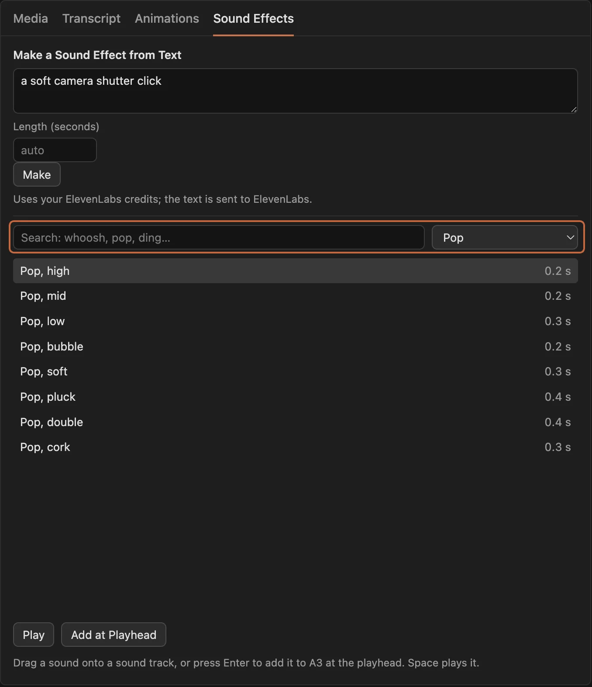

Sound Effects
Whooshes, pops, clicks and dings, ready to drop on the timeline. The built-in sounds are made by Kilnframe itself.

Find a sound
- Type in Search: whoosh, pop, ding…, or pick a Category: Whoosh, Swoosh, Riser, Pop, Click and tick, Ding and chime, Impact and hit, Glitch, Typing and more.
- Play listens to it; Space plays the one you picked.
- Add at Playhead puts it on the timeline where the playhead is, or press Enter. You can also drag a sound onto a sound track.
More sounds
More Sounds downloads about 200 real recordings that anyone may use (CC0). It happens only when you press the button. Sound Credits lists where they come from; they need no credit in your video.
Make a sound from a text
Under Make a Sound Effect from Text, describe the sound, for example “a heavy wooden door creaks open”, set a Length (seconds) or leave it to ElevenLabs, and press Make. The new sound goes to the top of the list, under Made by you.
This needs an ElevenLabs API key (Settings › AI). The text is sent to ElevenLabs and the sound uses your ElevenLabs credits; Kilnframe asks once before the first one.
Sounds placed from here do not dip under the speech; your own music and sounds do (Sound and Mixer).